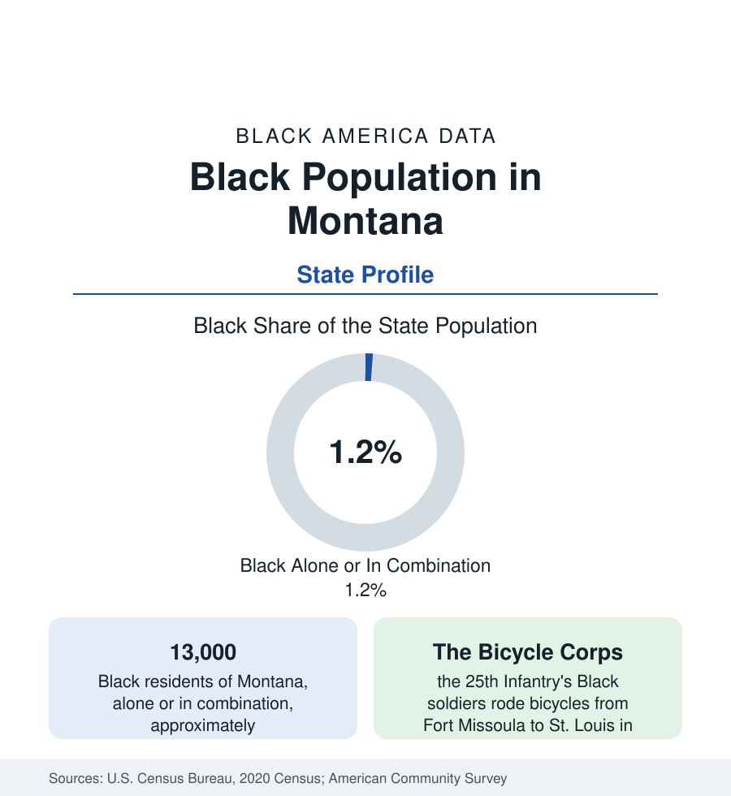

Black Census
Black Population in Montana: The Bicycle Corps and the Smallest Map
About 13,000 Black Montana residents — one in eighty — the smallest share in the nation, with a history written by Buffalo Soldiers. The census profile.

Montana holds about 13,000 Black residents — Black alone or in combination — roughly one in eighty of its people, with Black alone at about 6,500, or 0.6 percent: the smallest Black share of any state in the nation. The profile of the smallest population in this reference is necessarily a profile of individuals, regiments, and institutions rather than communities — and yet Montana's Black history holds two of the western record's most famous episodes, and its modern Black population, though dispersed, is growing faster than the state around it.
The Regiments: Missoula, Assinniboine, Harrison
Black Montana was created by the Army. The 25th Infantry — a Black regiment — garrisoned Fort Missoula from 1888, and from there its soldiers conducted the Army's celebrated bicycle experiments: in 1896 and 1897 the 'Bicycle Corps' rode from Missoula to Yellowstone and then to St. Louis, 1,900 miles in 41 days, testing bicycles as military transport and generating national press — the riders' photographs are among the iconic images of the Black regulars. The 24th Infantry and the 9th and 10th Cavalry rotated through Fort Assinniboine (near Havre, then among the largest posts in the West) and Fort Harrison at Helena. The veterans who stayed seeded small communities in the fort towns; Helena, the capital, held the most durable — a Black neighborhood around its rail yards and statehouse with churches dating to the 1880s — and the mining cities (Butte above all, whose cosmopolitan camps included a small Black community with its own churches and a chapter of the era's Black civic life) and the railroad towns (Great Falls, Miles City, Glendive) held the rest of the territorial-era layer.
The Modern Dispersal
No Montana city holds a Black population large enough to form a census-visible community in the mainland sense. Great Falls (Malmstrom Air Force Base) and Billings (the state's largest city and medical-rail hub) hold the largest counts — each in the range of one to two thousand in combination counts — followed by Missoula and Bozeman (the university towns), Helena, and the base and college communities. The population's occupational shape follows: military families at Malmstrom, university students and staff, health-care and service workers in the regional hubs, and individual families across the ranch and reservation-border counties where a county's entire Black population may number in the dozens. Black Montanans' civic institutions are correspondingly statewide rather than neighborhood-based: a small network of churches, the Montana Black heritage projects of the state historical society, and the universities' Black student organizations function as the community's infrastructure.
Indicators in the Smallest Sample
At 13,000 people, Montana's survey estimates carry the widest margins in this reference, and the levels should be read as approximations: the aggregate picture they give — incomes near the national Black pattern, attainment lifted by the university and military shares, homeownership below the state's high rate — is directionally plausible and statistically fragile. The counts themselves are the more reliable data: the decennial census's exact enumeration shows the population roughly doubling in combination counts across the past two censuses, the fastest percentage growth of any state from the smallest base, driven by the same amenity migration that is growing Montana generally (the pandemic-era acceleration appears in the estimates) plus the university towns' expansion.
What a Small Population's Data Mean
Montana tests this reference's method at its limit: the census machinery reports its Black population with the same categories as Mississippi's, and the honest profile is the one that says what the numbers can bear — a presence, a history, a growth rate — and no finer. The Bicycle Corps' ride remains the apt emblem: a small Black company, in the middle of the continent's emptiest quarter, doing something the whole country read about. The data have been like that in Montana ever since: small numbers, long shadows.
Reading the Montana Numbers
Montana closes the census section's western survey at its minimum: one in eighty residents, 13,000 people, no Black county above 4 percent, and two of the finest stories in the western file. The reference includes it at full length because completeness is the point of an atlas — every state's Black population, at whatever scale, is part of the national count of 52.8 million that the overview article reports.
More in Black Census
The Black Population of the United States: Size, Definitions, and Distribution
The Black population of the United States totals 52.8 million — 15.4 percent of the nation. How the Census Bureau defines and counts the population, and where it lives.
Black Median Household Income in the United States
Black median household income stands at $56,490 in the Census Bureau's annual income report — how the figure is measured, how it compares, and what drives it.
The Black Poverty Rate: Levels, Children, and the Long Trend
The official Black poverty rate is 17.1 percent — against 11.1 percent nationally and 7.7 percent for non-Hispanic White Americans. How poverty is measured and what the data show.
Source: U.S. Census Bureau, 2020 Census; American Community Survey; Population Estimates Program.